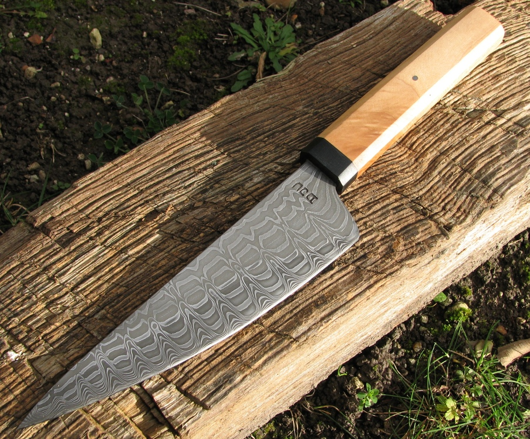

a pattern welded kitchen knife with a 6 1/2 inch blade
December 2011
I made this knife for myself. I have been planning this pattern for a couple of years and I'm quite pleased with the way it turned out. I made a long bar of 18 layers and cut it into 3 pieces.
I stacked these with the outer bar layers vertical and the middle bar layers horizontal. Forged the blade close to shape and then cut grooves both sides to make the ladder pattern.
The different layer orientations give the patterns once polished and etched.
The handle is maple with a black micarta bolster and leather spacer.
